Photo Viewer Classic
A fast, simple and lightweight photo viewer for Windows 10 that just works
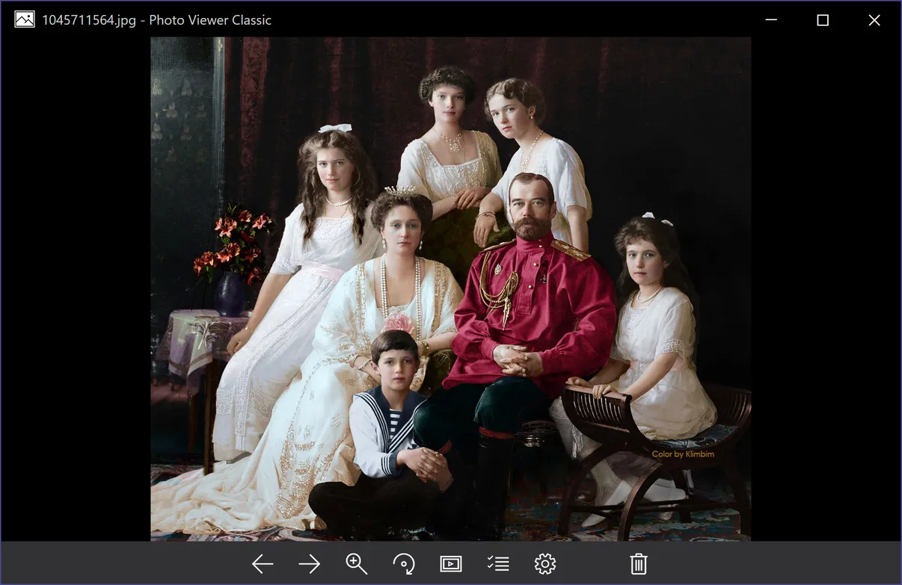
This app is for anyone who is fed up with Microsoft Photos. Fed up with files that open one minute and not the next. Fed up with the jerkiness and clumsiness. Fed up with the bloat, the slowness and the huge system resources it uses. There is a better way. Photo Viewer Classic is modeled on the old Windows Photo and Fax Viewer but modernizes and improves on it in every way.
From Iggy Makes Things
FEATURES
- Supports a wide range of image formats (JPEG, PNG, APNG, GIF, ICO, BMP, WEBP, AVIF and SVG files)
- Supports Touch Controls (Swipe, Pinch to Zoom, Double Tap to Zoom, Pan and Drag) alongside Keyboard and Touchpad controls
- Supports Drag and Drop (unlike Microsoft Photos)
- Reads EXIF Data to give you detailed information about your images
- Supports Windows Commands (Share Photos, Import Photos, Open File Location, File Properties, Open With, Print, Copy, Set as Background, Save as)
- Has Light and Dark themes
- Allows sorting of photos by Name, Date, Type and Size
- Supports a Fullscreen mode and Image slideshows
SCREENSHOTS
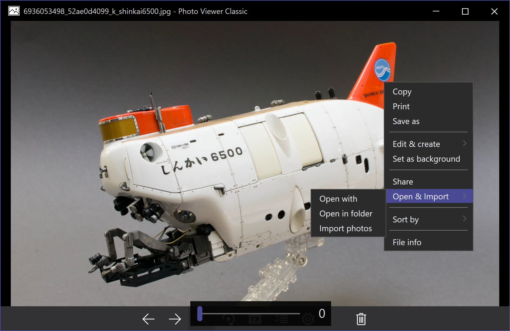
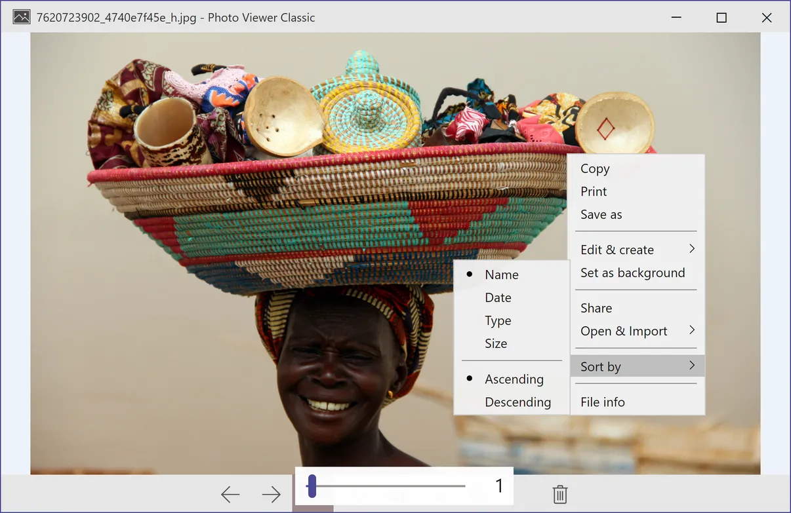
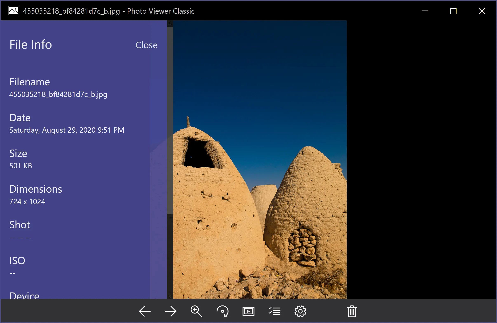
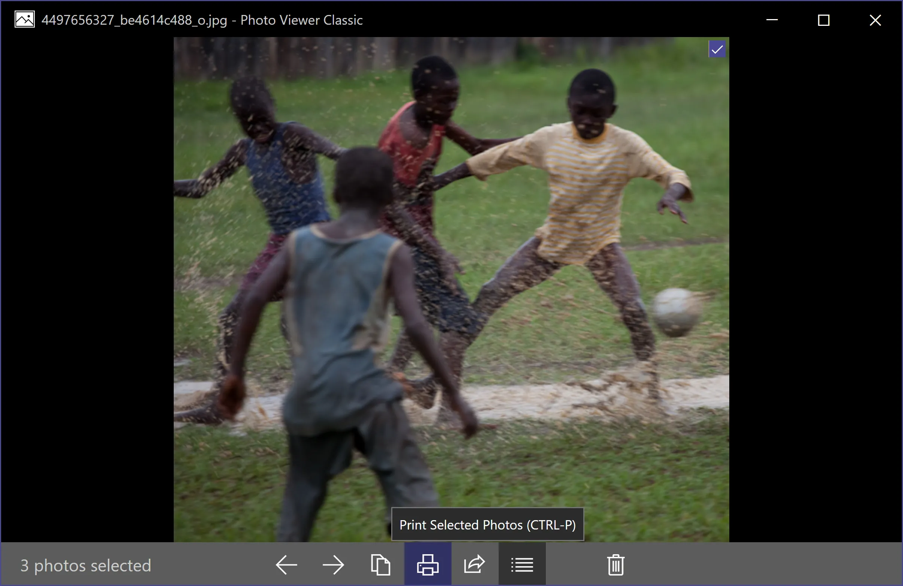
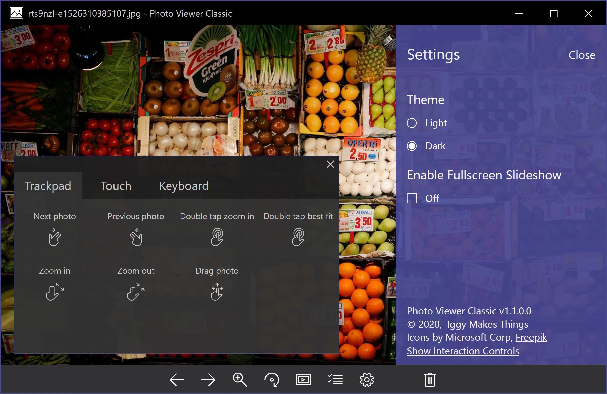
PRIVACY POLICY
We do not spy on or store any of your data, period. No ads, targeted or otherwise. Everything is stored locally on your hard drive. Just like in the good old days.
Ready to get started?
- Supports a wide range of image formats (JPEG, PNG, APNG, GIF, ICO, BMP, WEBP, AVIF and SVG files)
- Supports Touch Controls (Swipe, Pinch to Zoom, Double Tap to Zoom, Pan and Drag) alongside Keyboard and Touchpad controls
- Supports Drag and Drop (unlike Microsoft Photos)
- Reads EXIF Data to give you detailed information about your images
- Supports Windows Commands (Share Photos, Import Photos, Open File Location, File Properties, Open With, Print, Copy, Set as Background, Save as)
- Has Light and Dark themes
- Allows sorting of photos by Name, Date, Type and Size
- Supports a Fullscreen mode and Image slideshows
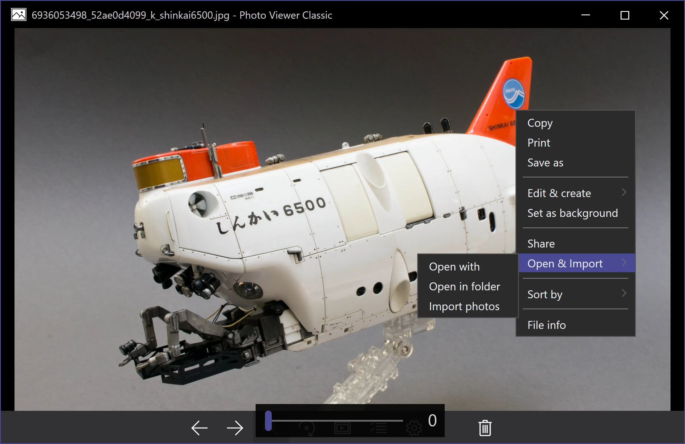
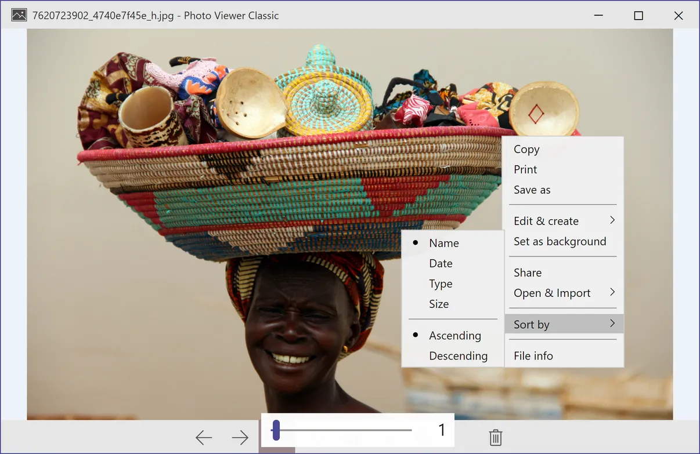
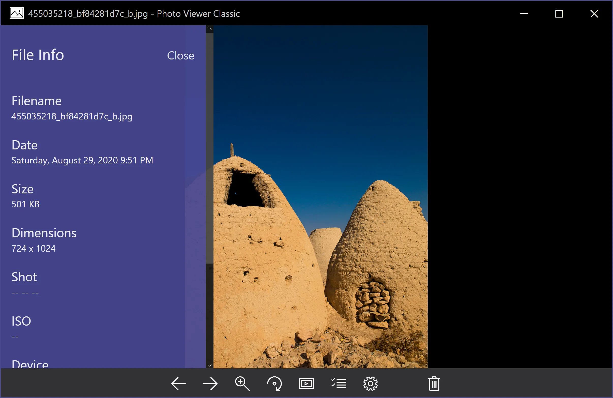
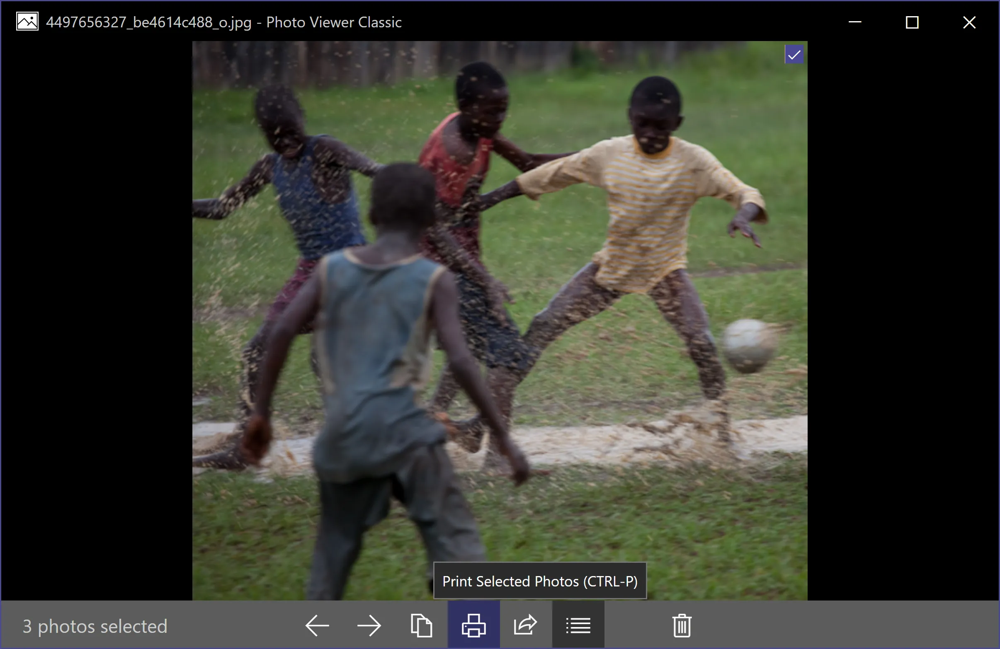
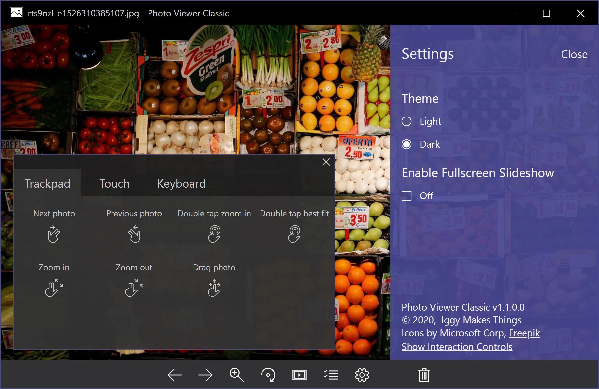
PRIVACY POLICY
We do not spy on or store any of your data, period. No ads, targeted or otherwise. Everything is stored locally on your hard drive. Just like in the good old days.
Ready to get started?
Ready to get started?